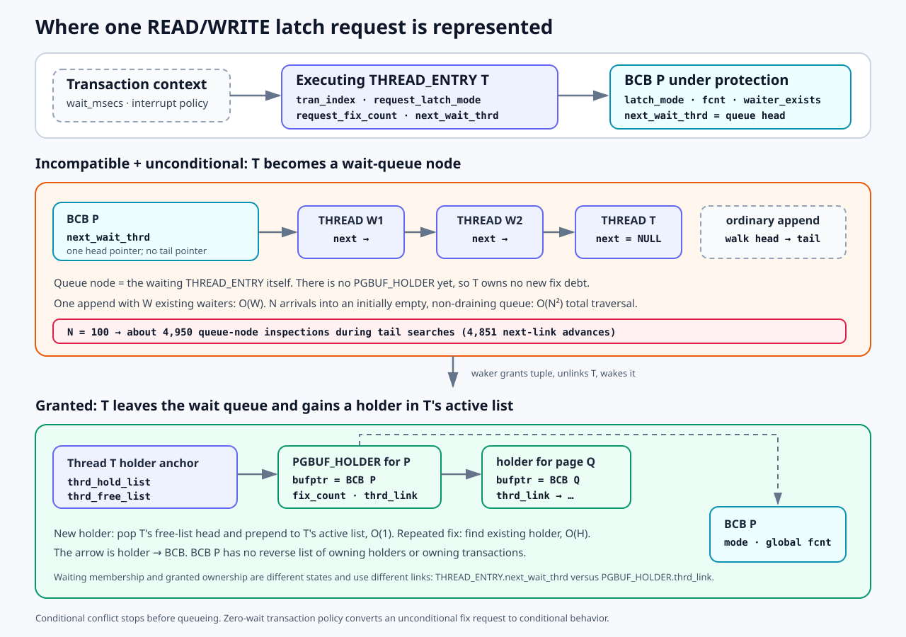
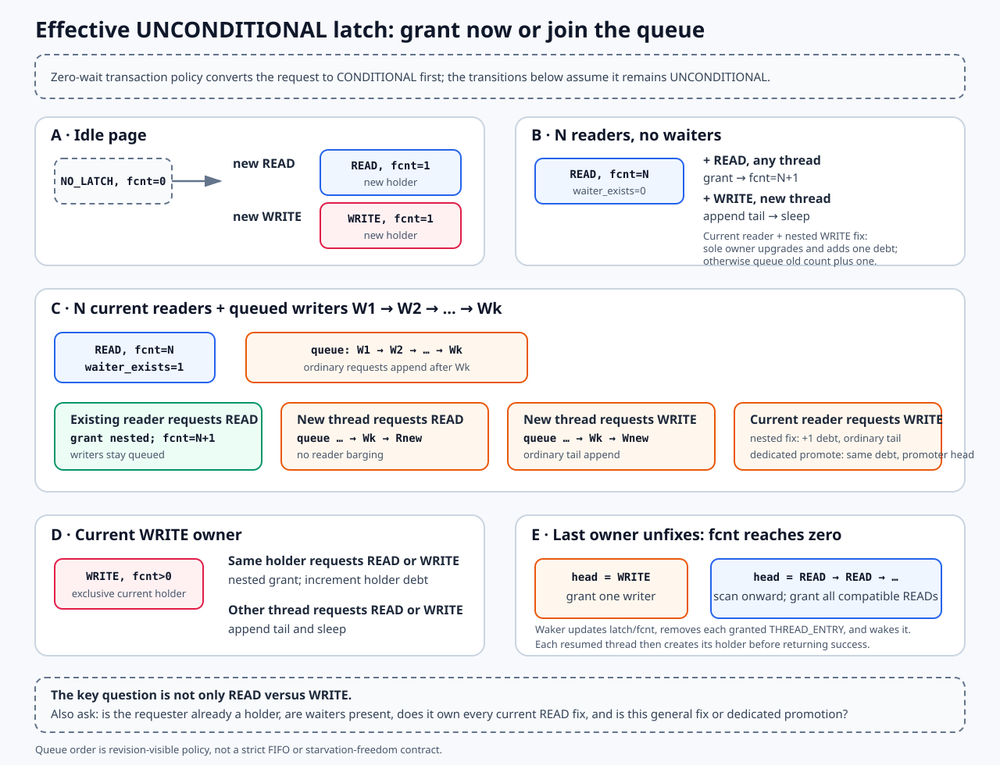
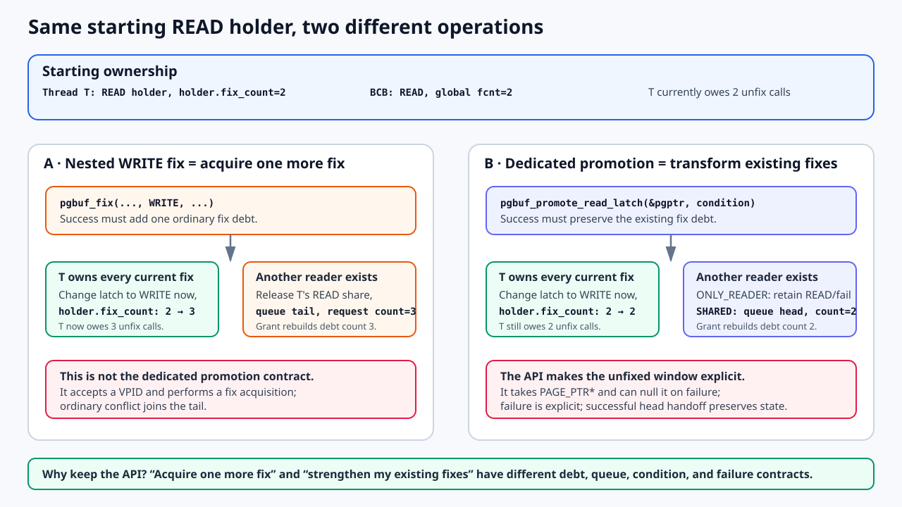
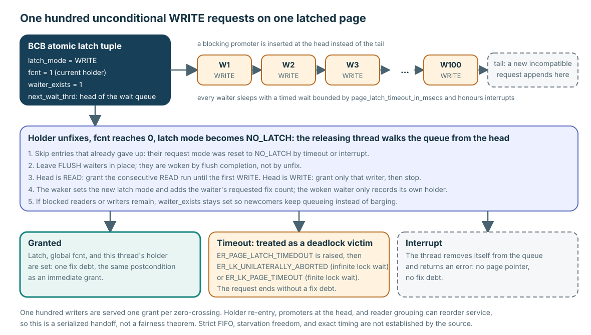
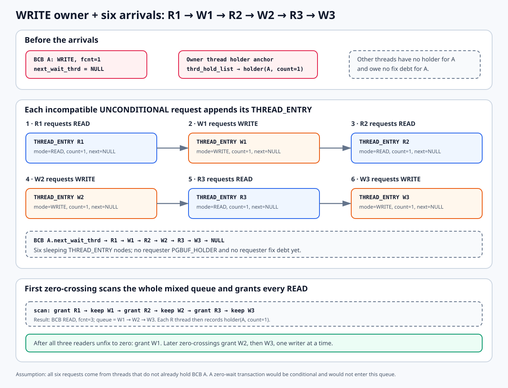

Five paths do not create the same ownership
| Outcome | Caller result | Fix debt? |
|---|---|---|
| Immediate grant | Latch tuple and holder are recorded; page pointer returned. | Yes—one successful acquisition. |
| Conditional rejection | Returns without queueing. | No. |
| Wait | Request is represented in the BCB queue and thread sleeps. | Not yet. |
| Timeout or interrupt | Queue request is cancelled/removed and error returned. | No. |
| Wakeup and grant | Waker updates latch tuple; resumed thread records its holder. | Yes—the same postcondition as immediate success. |
Being queued is a pending request, not ownership. Only the completed grant creates release debt.
The waiter list and holder list are different structures
While waiting, the request is linked from the BCB to a THREAD_ENTRY. After grant, ownership is linked from that thread to a PGBUF_HOLDER.

The waiting thread is the queue node. It gains no new holder until the latch grant succeeds.
| Moment | Linked-list anchor and link | What the node means |
|---|---|---|
| Incompatible unconditional wait | BCB.next_wait_thrd → THREAD_ENTRY.next_wait_thrd | The THREAD_ENTRY carries request_latch_mode and request_fix_count. It is a pending request, not new ownership. |
| Successful grant | holder_anchor.thrd_hold_list → PGBUF_HOLDER.thrd_link | The holder points to the BCB and counts this thread's nested fix debt. |
The waker changes the BCB latch tuple, unlinks the waiting THREAD_ENTRY, and wakes it. The resumed thread then pops a reusable holder from its free list and prepends it to its active list. The BCB has a wait-queue head, but no reverse list of holders or transactions.
Thread ownership versus transaction policy
The executing thread owns both pieces of page-buffer bookkeeping. Its tran_index lets page buffer read the transaction's wait_msecs and report transaction-aware timeout or interrupt errors. The transaction influences waiting policy; it is not the node in a page-buffer holder list.
Verified mechanism: the BCB queue head and holder structures are at pinned page_buffer.c:460–528; the thread request fields are at thread_entry.hpp:228–256; holder allocation is at page_buffer.c:5922–6086.
Unconditional means “wait on conflict,” not “always wait”
Before latch work, a transaction with zero-wait policy converts even an unconditional fix to conditional behavior. Otherwise, a compatible request succeeds immediately and an incompatible request queues.
| Current BCB state | READ request | WRITE request |
|---|---|---|
NO_LATCH | Set READ, global fcnt=1, and create a holder. | Set WRITE, global fcnt=1, and create a holder. |
| READ, no waiter | Grant immediately. Existing thread holder increments; a new reader gets its own holder. | A nested pgbuf_fix(..., WRITE, ...) upgrades immediately only if this thread owns all current fixes, then adds one new fix debt. Otherwise it waits. |
| READ, waiter exists | An existing holder may re-enter. A new reader waits instead of barging. | The same nested-WRITE-fix rule applies. This is not the dedicated promotion API's contract. |
| WRITE | The current WRITE holder may nest a READ; another thread waits. | The current WRITE holder may re-enter; another thread waits. |

“One more reader” is incomplete: an existing reader and a new non-holder reader follow different paths when writers are waiting.
With N readers and no waiter, another READ is granted immediately. With N readers and queued writers, a new non-holder reader goes behind those writers, but an existing reader may re-enter READ. A new writer also joins the tail. “A current reader asks for WRITE” is incomplete: a nested WRITE fix acquires another debt, while dedicated promotion transforms the fixes the caller already owns.
If a general WRITE fix must wait while this thread already holds READ fixes, the path subtracts this thread's READ contribution from global fcnt, removes its holder, and queues a request carrying the old count plus one. A dedicated blocking pgbuf_promote_read_latch() preserves the old count and inserts its promoter at the queue head. Ordinary conflicting fixes append at the tail.
Why does a separate READ-to-WRITE promotion API exist?

Both paths may end with WRITE protection, but they do not promise the same ownership accounting.
| Difference | Nested pgbuf_fix(..., WRITE, ...) | pgbuf_promote_read_latch() |
|---|---|---|
| Intent | Acquire one more fix with WRITE protection. | Strengthen the fixes already owned. |
| Starting at holder count 2 | Success ends at count 3, so three unfixes are owed. | Success stays at count 2, so two unfixes are owed. |
| Blocking path | Carry old count plus one and append at the ordinary tail. | Carry the same count and insert the promoter at the head. |
| Promotion-specific choice | None; this is the general fix condition. | PGBUF_PROMOTE_ONLY_READER can fail while retaining READ; PGBUF_PROMOTE_SHARED_READER may release and wait. |
| Lifetime signal | Returns the result of another VPID-based fix. | Takes PAGE_PTR *; a blocking failure can null it, exposing that the old borrowed lifetime ended. |
The immediate upgrade branch inside the general helper is therefore not a replacement for the API. It satisfies a new-acquisition contract. The dedicated function provides a same-debt transformation, promotion-specific policy, queue-head continuity, and an explicit hard-failure pointer boundary. Lesson 10 follows that protocol through representative B-tree callers.
fcnt=1 and then increments the existing holder. Starting from holder count 2 therefore appears to leave global count 1 and holder count 3. This is candidate VS-18, not a proven safe promotion substitute; a focused runtime test is still required.Does queueing 100 waiters cost O(N²)?
Yes, cumulatively for insertion into a queue that does not drain. The BCB has only next_wait_thrd, a head pointer. It has no tail pointer. An ordinary append walks from the head to the final THREAD_ENTRY.
| Operation | Structural cost | Reason |
|---|---|---|
Append one waiter with W already queued | O(W) | Walk the singly linked list to find the tail. |
| Append 100 waiters before any dequeue | O(N²) cumulative | About 1+2+...+99=4,950 node inspections, or 4,851 actual next-link advances. |
| Insert a blocking promoter | O(1) | Insert directly at the head. |
| Wake one head WRITE waiter | O(1) list work | Remove the head and stop; the latch is now WRITE. |
| Wake a READ group | up to O(W) | Scan the queue, leave incompatible writers/FLUSH nodes linked, remove cancelled nodes, and grant later compatible READ requests. |
| Remove an arbitrary timed-out waiter | O(W) worst case | Search for its predecessor; many such removals can also accumulate to O(N²). |
Verified mechanism: grant classification is pinned page_buffer.c:6277–6634; ordinary tail append and promoter head insertion are at 7041–7099; arbitrary timeout removal is at 7198–7279.
Incompatible requests wait for an ownership zero-crossing

Serialized handoff is source-visible; strict fairness is not.
- A current WRITE holder keeps
fcnt > 0. Each incompatible unconditional WRITE request appends to the BCB queue; a blocking promoter is the head-insertion exception. - Each waiter sleeps with a bounded, interrupt-aware wait. A request converted to conditional behavior never queues.
- When the current holder unfixes and global
fcntreaches zero, the releasing thread walks the queue while holding BCB protection. - It removes cancelled entries and leaves FLUSH waiters linked. A first granted WRITE stops the scan; a first granted READ lets the scan grant later readers across queued writers.
- The waker installs latch mode and requested fix count; the resumed thread records its per-thread holder before success.
Verified mechanism: pinned grant/wait decision is page_buffer.c:6278–6634; queue/sleep is 7041–7450; zero-crossing wakeup is 7452–7590.
A READ grant can pass queued writers during the same wakeup scan

Assume six new non-holder threads arrive as R1 → W1 → R2 → W2 → R3 → W3.
Initially only the owner thread has holder(A, count=1). All six arrivals conflict with BCB A's WRITE latch, so each appends its own THREAD_ENTRY to A.next_wait_thrd. The nodes carry requested mode and count, but none of the six requesters has a PGBUF_HOLDER, page pointer, or fix debt yet.
When the owner unfixes to zero, the wakeup loop grants R1 and changes the tuple to READ. It does not stop at W1: it leaves W1 linked, continues scanning, grants R2, leaves W2, grants R3, and leaves W3. The result is READ, fcnt=3 with queue W1 → W2 → W3. Each awakened reader then records holder(A, count=1) in its own thread list. When all three readers later unfix to zero, W1 is granted; later zero-crossings grant W2 and W3 one at a time.
Does every READ arrival scan every waiter?
It scans to the tail once to enqueue; it does not run group wakeup. While the original WRITE owner remains fixed, every ordinary conflicting request—READ and WRITE alike—walks the singly linked queue to find its tail. Reader grouping runs later, once a zero-crossing selects READ.
| Alternating workload queued before release | All append inspections | READ-arrival share | Group wakeup |
|---|---|---|---|
100 total = 50 READ + 50 WRITE | 4,950 | 2,450 if READ first; 2,500 if WRITE first | One O(100) scan grants all 50 readers. |
200 total = 100 READ + 100 WRITE | 19,900 | 9,900 if READ first; 10,000 if WRITE first | One O(200) scan grants all 100 readers. |
If the queue starts with WRITE, the first zero-crossing grants that one writer and stops. When it releases, the new head is READ and the next scan grants every READ across the remaining writers. Thus the cost is cumulative O(N²) tail-append work plus one O(N) reader scan—not a full group scan for every READ request. The exact sums assume no dequeue while arrivals are building the queue.
Verified mechanism: pinned ordinary append is page_buffer.c:7041–7099; mixed-queue scanning, tuple updates, node removal, and wakeup are 7452–7590.
Writer stops the scan; READ keeps searching for readers
| Scanned request | Zero-crossing action | What remains |
|---|---|---|
| WRITE | Grant that writer only, then stop. | Other readers/writers stay queued. |
| READ | Grant it, keep scanning, leave incompatible WRITE/FLUSH entries linked, and grant later READ entries. | Skipped writers and FLUSH waiters remain; granted/cancelled entries are removed. |
Cancelled NO_LATCH | Skip it. | Continue scanning. |
| FLUSH waiter | Leave it for the flush-completion protocol. | It is not granted by unfix. |
While blocked readers or writers remain, waiter_exists stays set. A new non-holder READ cannot simply use compatibility to barge past the queue. A thread already holding the BCB may still re-enter under the nested-fix protocol.
“Roughly arrival order” is not FIFO or starvation freedom
One hundred writers are normally served one per zero-crossing in queue order. A mixed queue behaves differently: R1 → R2 → W1 → R3 grants R1, R2, and R3 in one READ scan while W1 stays queued. Three mechanisms can therefore reorder apparent service:
- Holder re-entry: an existing holder can acquire nested ownership past waiters.
- Promotion: a blocking promoter is inserted at the head.
- Reader grouping: once READ is selected, the scan can grant later READ requests across queued writers.
Timeout and interrupt are cleanup paths, not late grants
A timeout resets/cancels the request and reports a page-latch timeout that is mapped according to transaction wait policy. An interrupted waiter removes itself. Neither returns a page pointer or creates a holder that the caller must unfix.
Review both sides of every wakeup: the waker’s tuple transition and the resumed thread’s holder allocation. Lesson 8’s VS-11 candidate exists exactly at that post-grant holder-recording seam; queue success is not complete until both ledgers agree.
Trace one queue without saying “the waiter owns the page”
Prompt
A WRITE holder has fcnt=1. The queue is R1 → R2 → W1 → R3; another non-holder reader arrives. Then the holder unfixes to zero.
Your task: predict where the newcomer queues, which READ requests the scan grants across W1, when debt begins, what W1 still owns, and why the result does not prove fairness. Add the timeout result for W1.
Paste your answer into the chat. I will check queue ownership, zero-crossing order, grant completion, cleanup, and evidence boundaries before recording Advanced progress.
Follow one request across both threads
Read pinned page_buffer.c:7041–7590. Mark queue append, timed sleep, cancellation, zero-crossing, tuple grant, and resumed holder recording. Separate source-visible ordering from scheduler fairness.
Open the printable latch-queue card →
← Return to Lesson 0008 · Attempt the Lessons 1–9 synthesis →